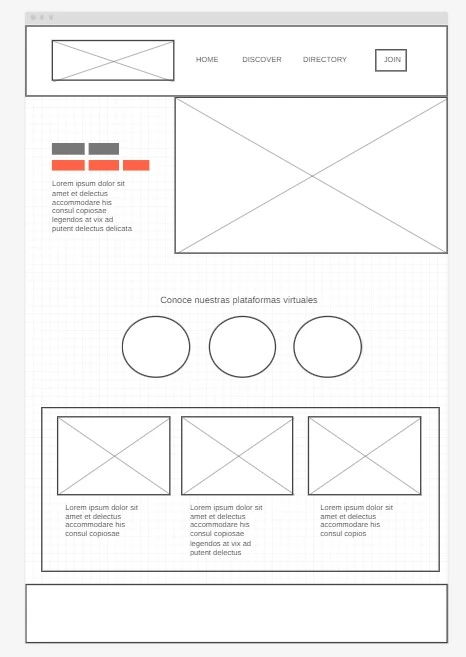
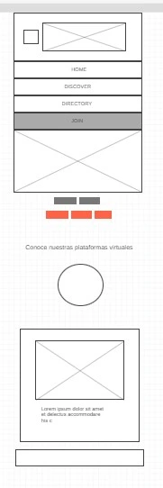

Site Name
El Loko y Susinko Official — This name directly represents the band and helps fans easily find the official website.
Site Purpose
The purpose of this website is to introduce and promote the band El Loko y Susinko to a wider audience. It will showcase their music, upcoming shows, photo/video gallery, and provide a contact form for bookings or fan messages.
Scenarios
- How can I listen to El Loko y Susinko’s music online?
- How can I contact the band for an event or collaboration?
- Where can I find information about their next live performance?
- Who are the band members and how did El Loko y Susinko start?
Color Scheme
The color palette reflects the band’s retro, energetic identity and meets AAA accessibility contrast standards.
- Light theme: Background #FAF8F4, Text #1B1B1B, Accents in green, yellow, orange, and red tones.
- Dark theme:Background #1B2A26, Text #FAF8F4, Accents in bright warm tones for clarity and mood.
Typography
Headings: “Pacifico” (Google Fonts) — retro script style fitting the logo.
Body text: “Baloo 2” — rounded sans-serif for readability.
Accent text:Optional use of “Lobster Two” for highlights.
Wireframe Overview
 The homepage will feature:
- Header with logo, navigation, and theme toggle
- About section introducing the band
- Music playlist and video section
- Gallery of performances
- Contact form for bookings and fan messages
- Footer with social media links